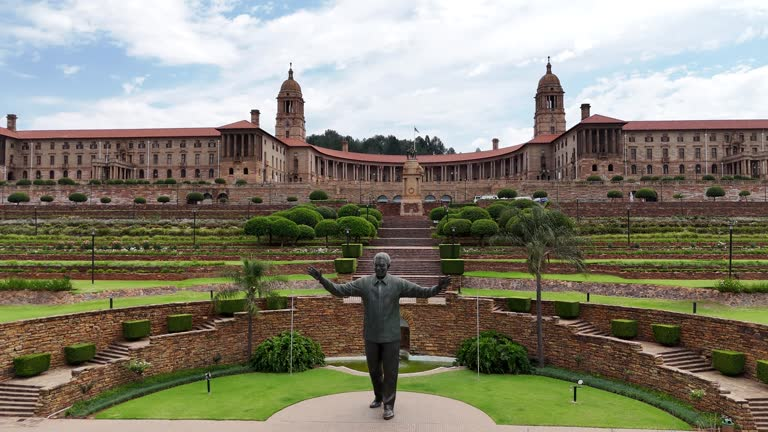

South Africa City Breaks Itineraries
For those seeking a shorter getaway packed with urban adventures, cultural experiences, and local flavor, South Africa’s cities offer vibrant and diverse opportunities. From Cape Town's coastal charm to Johannesburg's historical depth, these city break itineraries are perfect for a refreshing escape.
1. Cape Town City Break (4 Days)
Day 1: Arrival and Exploration
- Check-in at a central boutique hotel or waterfront accommodation.
- Visit Table Mountain via cable car for panoramic views.
- Stroll through the V&A Waterfront, exploring shops, restaurants, and the Two Oceans Aquarium.
Day 2: Cape Peninsula Tour
- Drive along Chapman’s Peak Drive for stunning coastal scenery.
- Visit Cape Point and the Cape of Good Hope.
- Stop by Boulders Beach to see the African penguins.
Day 3: City Highlights
- Explore Bo-Kaap, known for its colorful houses and Cape Malay culture.
- Tour the Kirstenbosch Botanical Gardens.
- Take a ferry to Robben Island, where Nelson Mandela was imprisoned.
Day 4: Departure
- Morning visit to Greenmarket Square for local crafts and souvenirs.
- Enjoy a leisurely breakfast at Camps Bay before departure.
Cape Town
Explore Cape Town's iconic landmarks and coastal beauty.
2. Johannesburg City Break (3 Days)
Day 1: Arrival and Historical Exploration
- Check into a luxury city hotel or boutique guesthouse in Sandton.
- Visit the Apartheid Museum for an insightful look into South Africa’s history.
- Take a guided tour of Soweto, including Vilakazi Street, home to Nelson Mandela and Desmond Tutu.
Day 2: Urban and Cultural Highlights
- Explore Constitution Hill, a former prison and now a symbol of justice.
- Stroll through Maboneng Precinct, a trendy area with art galleries, cafes, and local markets.
- Evening dining at one of Sandton’s top restaurants.
Day 3: Departure
- Visit the Cradle of Humankind, a UNESCO World Heritage Site, located just outside Johannesburg.
- Depart after lunch.
Johannesburg
Discover Johannesburg's rich history and vibrant urban culture.
3. Durban Beach and Culture Break (3 Days)
Day 1: Arrival and Beachfront Relaxation
- Stay at a beachfront hotel along Durban’s Golden Mile.
- Relax by the beach or take a refreshing swim in the Indian Ocean.
- Evening stroll along the promenade with dinner at a seaside restaurant.
Day 2: Cultural Tour
- Visit uShaka Marine World for family-friendly entertainment.
- Explore Victoria Street Market for spices and local crafts.
- Enjoy fresh seafood at a beachfront restaurant.
Day 3: Departure
- Visit the Moses Mabhida Stadium for adventure activities like the SkyCar or Big Swing.
- Enjoy a final beachfront breakfast before departure.
Durban
Enjoy Durban's cultural highlights.
4. Pretoria and Johannesburg Combo (4 Days)
Day 1: Pretoria – The Jacaranda City
- Check into a charming guesthouse in Pretoria.
- Visit Union Buildings and take in the city views.
- Explore the Voortrekker Monument, a key cultural landmark.
Day 2: Pretoria to Johannesburg
- Drive to Johannesburg and tour Gold Reef City, a theme park and former gold mine.
- Visit the Origins Centre Museum, showcasing the history of early humans.
Day 3: Soweto and Urban Vibes
- Take a day trip to Soweto, visiting landmarks like the Hector Pieterson Museum and Orlando Towers.
- Evening at the lively Maboneng Precinct for dinner and entertainment.
Day 4: Departure
- Morning shopping at Sandton City Mall or Nelson Mandela Square before heading home.

Pretoria
Explore the Union building
5. Cape Town and Stellenbosch Getaway (5 Days)
Day 1-3: Cape Town
- Explore iconic attractions such as Table Mountain, Cape Peninsula, and the V&A Waterfront.
- Take a sunset cruise or enjoy a beach day at Camps Bay.
Day 4: Stellenbosch
- Drive to Stellenbosch in the Cape Winelands.
- Enjoy wine tastings, cellar tours, and gourmet dining at local vineyards.
- Stay overnight at a luxury wine estate.
Day 5: Departure
- Morning stroll through Stellenbosch’s oak-lined streets and art galleries.
- Depart after breakfast.
6. Port Elizabeth Short Break (3 Days)
Day 1: Arrival and Coastal Vibes
- Check into a beachfront hotel on Humewood Beach.
- Visit Bayworld for a blend of marine and cultural exhibits.
- Enjoy dinner at a seaside restaurant.
Day 2: Addo Elephant National Park
- Full-day safari at Addo Elephant National Park, home to the Big 5.
- Return to Port Elizabeth for an evening of relaxation.
Day 3: Departure
- Morning walk along the Donkin Heritage Trail, exploring historical landmarks.
- Depart in the afternoon.

Port Elizabeth
Relax and enjoy the coastal view
7. Bloemfontein Heritage Tour (3 Days)
Day 1: Arrival and City Exploration
- Stay at a boutique guesthouse in the city center.
- Visit the National Museum and Oliewenhuis Art Museum.
Day 2: Historical Highlights
- Explore Naval Hill for panoramic views and the Franklin Game Reserve.
- Tour the Anglo-Boer War Museum and the Women’s Memorial.
Day 3: Departure
- Morning coffee at a local café before departure.
Why Choose a South Africa City Break?
- Perfect for a short yet immersive experience.
- Combine vibrant urban life with cultural and historical insights.
- Tailored itineraries for relaxation, exploration, or adventure.
Let us know if you'd like to customize your city break itinerary to fit your preferences!